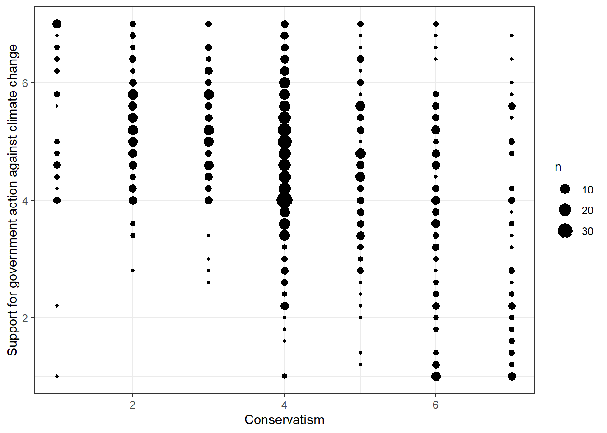
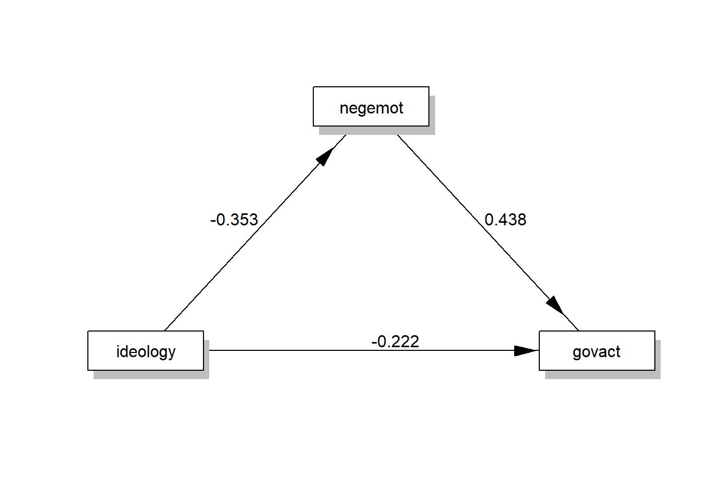

13 Tutorial: Mediation analysis
After working through Tutorial 13, you’ll…
- know the difference between linear regression, mediation analysis, and moderation analysis
- have a good idea about what problems are best solved with mediation analysis
- know how to perform and interpret a mediation analysis
13.1 Introduction to mediation
With linear regression we have already learned a statistical method that quantifies the relationship between variables. With simple linear regression, we can answer the question whether two variables share a linear relationship. With multiple linear regression, we can answer the question whether two variables share a linear relationship while controlling for the effect of third variables.
However, we still have limited benefit from knowing that two variables are associated, i.e., from asking whether two variables share a relationship. Instead, it is much more conclusive to ask why and how two variables are related: What is the mechanism that triggers/transports the effect of the independent variable X on the dependent variable Y? The objective of mediation analysis is to answer this question of “how?” / “what’s the mechanism that drives this relationship?”
A common workflow is to (1) run a linear regression and see whether there is a relationship, and (2) then run a mediation analysis to examine the nature of that relationship. Note: The implementation of a mediation analysis in your workflow should always be based on a careful theoretical argumentation! That is, you should be able to name a theory that provides a plausible mechanism by which X affects Y.
13.2 Difference between mediation and moderation
What’s the difference between mediation and moderation analysis?
While mediation analysis answers the question of how / through which (psychological) mechanisms effects occur, moderation analysis answers the question of when / for whom effects occur. Circumstances and certain personality traits can change the effect of X on Y – and that’s what moderation analysis is about. On the other hand, mediation analysis is a causal explanation. In a mediation model, relationships are thought to be causal, and the mediator variable M is assumed to lie on a causal path between X and Y.
In a very simplified way, mediation analysis describes the emotional, cognitive, or behavioral responses (the dependent variable Y) following some kind of psychological processing (mediator variable M, state) that was triggered by a certain event (the independent variable X). Moderation analysis, on the other hand, describes how an event (the independent variable X) triggers group-specific emotional, cognitive, or behavioral responses (the dependent variable Y) due to varying circumstances/personality traits that are dominant in these subgroups of the population (moderator variable W, trait). Always remember that a strong moderator variable can turn a positive predictor variable into a negative predictor variable, depending on the observed subgroups (and vice versa)!6
Example for mediation: Let´s take an example from selective exposure theory: According to selective exposure theory, reading opinion-inconsistent information (independent variable X) can trigger a psychological process called cognitive dissonance (mediator variable M). Cognitive dissonance is a psychological state that is very unpleasant and stressful, which is why individuals start to avoid opinion-inconsistent messages (dependent variable Y) to reduce cognitive dissonance.
13.3 Two-step process of mediation
Mediation analysis always assumes a two-step process. In the first step, an independent variable X influences a mediator variable M. In the second step, this mediator variable M then influences the dependent variable Y. However, in addition to the two-step effect mediated by M, which we call indirect effect, there will almost always be a direct effect of X on Y as well. To illustrate, see this image of a simple mediation model:
| Image: A simple mediation model (Source: Andrew F. Hayes, p. 81) |
Andrew F. Hayes explains this graphic representation of a mediation model in great detail, finding simple words, which is why I quote his explanation here:
“In such a model, there are two pathways by which X can influence Y. These pathways are found by tracing the ways one can get from X to Y while never tracing in a direction opposite to the direction an arrow points. One pathway leads from X to Y without passing through M and is called the direct effect of X on Y. The second pathway from X to Y is the indirect effect of X on Y through M. It first passes from antecedent X to consequent M and then from antecedent M to consequent Y. The indirect effect represents how Y is influenced by X through a causal sequence in which X influences M, which in turn influences Y.” (Hayes, 2022, p. 80-81)
The remaining direct effect of X on Y may come from other mediator variables that have not yet been considered and included in your model. Thus, the direct effect of X on Y becomes smaller as we include more mediator variables in our mediation model.
In summary, a simple mediation model contains two dependent variables (M) and (Y) and two independent variables (X) and (M), with X causally influencing Y and M, and M causally influencing Y.
13.4 Statistical representation and equations
Since we have two dependent variables, M and Y, we also need two equations to make predictions about these two variables. The first equation describes the effect of X on M and the second equation describes the effect of X AND M on Y. This means that the first equation represents a simple linear regression model and the second equation represents a multiple linear regression model. Sounds familiar, right? :)
- M = i[M] + a * X
- Y = i[Y] + c′ * X + b * M,
where i[M] and i[Y] represent the intercepts and a, b, and c′ are the respective regression coefficients.
| Image: A simple mediation model (Source: Andrew F. Hayes, p. 85) |
- c′: measures the direct effect of X on Y while controlling for M
- ab: measures the indirect effect of X on Y and is the product of (1) the direct effect of X on M (a) and (2) the direct effect of M on Y while controlling for X (b)
13.4.1 Direct effect c′
Since equation 2. represents a multiple linear regression model, you already know how to interpret the direct effect (try to remember the tutorial on Multiple regression!):
| The direct effect can be interpreted like this: Two individuals who differ by one unit on X but are equal on M (i.e., while controlling for M!) are estimated to differ by c′ units on Y. For a dichotomous / binary X variable, c′ estimates the difference between both group means while holding M constant. |
13.4.2 Indirect effect ab
To disassemble the indirect effect ab, let’s first discuss what the coefficients a and b represent. As you know from the simple linear regression analysis tutorial about OLS regression, a estimates the difference in M between two individuals who differ by one unit on X. And following the Multiple regression tutorial, you know that b estimates the difference in Y between two individuals who differ by one unit on M while controlling for X.
Mathematically, the indirect effect of X on Y through M is the product of a and b. Therefore, we call it the indirect effect ab. Let’s say that a = 0.5 and b = 0.8, then ab = 0.5 * 0.8 = 0.4.
| The indirect effect can be interpreted like this: Two individuals who differ by one unit in X are estimated to differ by ab units on Y because of the effect of X on M, which in turn affects Y. |
Since the indirect effect ab is a product of two separate effects a and b, the mathematical rules of multiplication apply to this product. This means that the indirect effect ab turns positive if both a and b are negative effects (remember: two minus signs cancel each other out in multiplication!). For example, if watching cigarette advertising on TV makes you develop a less healthy life style (i.e., a is negative) and having a healthy life style makes you less prone to become a smoker (i.e., b is negative), then the indirect effect ab of watching cigarette advertising on TV makes you more likely to become a smoker (i.e., ab is positive). Put differently, if cigarette advertising makes you less likely to live a healthy life, but living an unhealthy life makes you more likely to smoke, then cigarette advertising has a positive effect on smoking.
Tip for advanced students: Whenever you have a mediation hypothesis that predicts a positive relationship ab between X and Y, add a specification about the signs of a and b to your hypothesis! There are different constellations that can lead to a positive ab, and these constellations have very different implications for the validity of your theory. For example, a good hypothesis should read “We assume that watching cigarette advertising on TV increases the likelihood of becoming a smoker. This effect is mediated by life style, i.e., we assume that watching cigarette advertising on TV makes respondents develop less healthy life style habits and that healthy life style habits in turn make respondents less likely to start with smoking.”
13.4.3 Total effect
The total effect of X on Y is denoted as c. It is the sum of the direct effect of X on Y plus the indirect effect of X on Y that is being mediated by M (for dichotomous / binary variables, c is the difference in gourp means): c = c′ + ab.
| The total effect can be interpreted like this: Two individuals who differ by one unit in X are estimated to differ by c units on Y. |
13.5 Example
Let’s look at an actual example and interpret the results. We will work with the glbwarm data set again. Install / load the processR package and assign the glbwarm data to a source object.
# installing/loading the package:
if(!require(processR)) {
install.packages("processR");
require(processR)
} #load / install+load processR
data <- processR::glbwarm13.5.1 Knowing your data
You´ll find three variables in this data set that will be of great interest to us because they are great to learn mediation analysis with. You already know two of these variables from our OLS regression tutorial:
- govact (= support for government action):
The variable is an index of how each participant answered five questions regarding how supportive he or she is of different policies or activities taken by the US government to address the threat of global climate change (e.g. “How much do you support or oppose increasing government investment for developing alternative energy like biofuels, wind, or solar by 25%?”).
Response options were scaled from “Strongly opposed” (coded 1) or ”Strongly support” (7). - negemot (= negative emotions about climate change): This index measures participants´ negative emotional reactions to the potential of climate change. Participants´ responses to a question asking how often they experience each of three emotions while thinking about global warming: “worried,” “alarmed,” and “concerned”. “Not at all,” “somewhat,” “a little bit,” “some,” “a fair lot,” and “a great deal” were among the response alternatives. These replies were numerically coded from 1 to 6, and the average of each participant´s responses across all three emotions was calculated. Higher scores reflect feeling stronger negative emotions.
- ideology (= conservatism): This variable measures the political ideology of respondents on a conservatism scale. Replies range from 1 to 7. Higher scores reflect being more conservative, i.e. 1 “Very Liberal”, 2 “Liberal”, 3 “Somewhat Liberal”, 4 “Moderate, Middle of the Road”, 5 “Somewhat Conservative”, 6 “Conservative”, and 7 “Very Conservative”.
Throughout this chapter, the following research question will guide us on our way to master mediation analysis:
Research Question: Is the relationship between conservatism and support for government action against climate change mediated by negative emotions about climate change? That is, do people who are more conservative develop fewer negative feelings about climate change, while negative emotions about climate change increase support for government action against climate change?
13.5.2 Visual inspection of linear trends
You will surely remember that it is always a good idea to look at the relationships between our variables before we do any kind of analysis. So let’s start by examining the variables of interest.
- The relationship between conservatism and support for government action against climate change (X on Y without controlling for M)
data %>% ggplot(aes(x=ideology, y=govact)) +
geom_count() +
theme_bw() +
labs(x="Conservatism", y="Support for government action against climate change")
Evaluation: It seems that people who are more conservative are less supportive of government action against climate change. This correlation is far from perfect, but the pattern is evident.
- The relationship between conservatism and negative emotions about climate change (direct effect a of X on M)
data %>% ggplot(aes(x=ideology, y=negemot)) +
geom_count() +
theme_bw() +
labs(x="Conservatism", y="Negative emotions about climate change")
Evaluation: This relationship is difficult to capture visually. There seems to be a small effect at play here, with more conservative people expressing fewer negative feelings about climate change. This pattern is not very evident, but you can imagine a diagonal from the top left corner to the bottom right corner through the thicker bubbles.
- The relationship between negative emotions about climate change and support for government action against climate change (M on Y without controlling for X)
data %>% ggplot(aes(x=negemot, y=govact)) +
geom_count() +
theme_bw() +
labs(x="Negative emotions about climate change", y="Support for government action against climate change")Evaluation: We can assume that people who express larger negative sentiments about climate change are also more supportive of government action. Again, this pattern is evident.
13.5.3 Pearson’s r
Now quantify these association to check whether they are significant.
- The relationship between conservatism and support for government action against climate change (X on Y without controlling for M)
cor.test(data$govact,data$ideology, method="pearson")##
## Pearson's product-moment correlation
##
## data: data$govact and data$ideology
## t = -13.132, df = 813, p-value < 0.00000000000000022
## alternative hypothesis: true correlation is not equal to 0
## 95 percent confidence interval:
## -0.4733936 -0.3599884
## sample estimates:
## cor
## -0.4183199Evaluation: The association between conservatism and the support for government action is medium and negative (r = -0.41, p < 0.001). We can conclude that U.S. Americans who are more conservative are less likely to support government action against climate change.
- The relationship between conservatism and negative emotions about climate change (direct effect a of X on M)
cor.test(data$negemot,data$ideology, method="pearson")##
## Pearson's product-moment correlation
##
## data: data$negemot and data$ideology
## t = -10.611, df = 813, p-value < 0.00000000000000022
## alternative hypothesis: true correlation is not equal to 0
## 95 percent confidence interval:
## -0.4076942 -0.2869874
## sample estimates:
## cor
## -0.3487864Evaluation: The association between conservatism and negative emotions about climate change is medium and negative (r = -0.34, p < 0.001). We can conclude that U.S. Americans who are more conservative are less likely to express negative sentiments about climate change.
- The relationship between negative emotions about climate change and support for government action against climate change (M on Y without controlling for X)
cor.test(data$negemot,data$govact, method="pearson")##
## Pearson's product-moment correlation
##
## data: data$negemot and data$govact
## t = 20.183, df = 813, p-value < 0.00000000000000022
## alternative hypothesis: true correlation is not equal to 0
## 95 percent confidence interval:
## 0.5301050 0.6217505
## sample estimates:
## cor
## 0.5777458Evaluation: The association between negative emotions about climate change and the support for government action is medium and positive (r = 0.57, p < 0.001). We can conclude that U.S. Americans who have more negative feelings about climate change are more likely to support government action against climate change.
13.5.4 Fit models
Now that we know our relationships a bit better, we can fit our models to investigate the actual mediation. Because we need to retrieve two regression equations to explain the two dependent variables M and Y (see Statistical representation and equations), we now will fit and interpret two models, namely a single linear regression model and a multiple linear regression model.
- The simple linear regression model: The effect of conservatism on negative emotions about climate change (direct effect a of X on M)
summary(lm(negemot ~ ideology, data=data))##
## Call:
## lm(formula = negemot ~ ideology, data = data)
##
## Residuals:
## Min 1Q Median 3Q Max
## -3.645 -1.212 0.060 1.083 3.470
##
## Coefficients:
## Estimate Std. Error t value Pr(>|t|)
## (Intercept) 4.99794 0.14469 34.54 <0.0000000000000002 ***
## ideology -0.35263 0.03323 -10.61 <0.0000000000000002 ***
## ---
## Signif. codes: 0 '***' 0.001 '**' 0.01 '*' 0.05 '.' 0.1 ' ' 1
##
## Residual standard error: 1.433 on 813 degrees of freedom
## Multiple R-squared: 0.1217, Adjusted R-squared: 0.1206
## F-statistic: 112.6 on 1 and 813 DF, p-value: < 0.00000000000000022Evaluation: You can now infer the equation, which is M = 4.99 - 0.35*X. Two U.S. Americans who differ by one point in conservatism are estimated to differ by -0.35 (p < 0.001) points in their negative feelings about climate change. This means that our direct effect a (X on M) = -0.35.
Note that the results from the Pearson’s r correlation test and the OLS regression are not identical since the OLS regression has not been standardized and Pearson’s r is a standardized measure of association. Essentially, Pearson’s r is just the standardized slope of a simple linear regression line. If you had run a standardized linear regression, you’d retrieve the Pearson’s r coefficient:
data$ideology_st <- scale(data$ideology)
data$negemot_st <- scale(data$negemot)
summary(lm(negemot_st ~ ideology_st, data=data))##
## Call:
## lm(formula = negemot_st ~ ideology_st, data = data)
##
## Residuals:
## Min 1Q Median 3Q Max
## -2.38500 -0.79306 0.03923 0.70830 2.27062
##
## Coefficients:
## Estimate Std. Error t value Pr(>|t|)
## (Intercept) -0.000000000000008831 0.032848946119645242 0.00 1
## ideology_st -0.348786426090197332 0.032869117411763973 -10.61 <0.0000000000000002 ***
## ---
## Signif. codes: 0 '***' 0.001 '**' 0.01 '*' 0.05 '.' 0.1 ' ' 1
##
## Residual standard error: 0.9378 on 813 degrees of freedom
## Multiple R-squared: 0.1217, Adjusted R-squared: 0.1206
## F-statistic: 112.6 on 1 and 813 DF, p-value: < 0.00000000000000022- The multiple linear regression model: The effect of conservatism AND negative emotions about climate change on support for government action against climate change (direct effect c’ of X on Y while controlling for M AND direct effect b of M on Y while controlling for X)
summary(lm(govact ~ ideology + negemot, data=data))##
## Call:
## lm(formula = govact ~ ideology + negemot, data = data)
##
## Residuals:
## Min 1Q Median 3Q Max
## -4.9030 -0.6754 0.0788 0.6996 3.5205
##
## Coefficients:
## Estimate Std. Error t value Pr(>|t|)
## (Intercept) 3.93703 0.16907 23.286 <0.0000000000000002 ***
## ideology -0.22213 0.02638 -8.422 <0.0000000000000002 ***
## negemot 0.43761 0.02609 16.774 <0.0000000000000002 ***
## ---
## Signif. codes: 0 '***' 0.001 '**' 0.01 '*' 0.05 '.' 0.1 ' ' 1
##
## Residual standard error: 1.066 on 812 degrees of freedom
## Multiple R-squared: 0.3873, Adjusted R-squared: 0.3858
## F-statistic: 256.6 on 2 and 812 DF, p-value: < 0.00000000000000022Evaluation: You can now infer the equation, which is Y = 3.93 - 0.22 * X + 0.43 * M. Two U.S. Americans who differ by one point in conservatism, but rate equally high on negative emotions about climate change, are estimated to differ by - 0.22 (p < 0.001) points in their support for government action against climate change. Similarly, two U.S. Americans who differ by one point in their negative emotions about climate change, but are both equally conservative, are estimated to differ by + 0.43 (p < 0.001) points in their support for government action against climate change.
This means that our direct effect b (M on Y while controlling for X) = 0.43 and that our direct effect c´ (X on Y while controlling for M) = -0.22.
- Calculate the indirect effect ab
Now that we know the direct effects a and b, it is easy to calculate ab. We have a negative direct effect a = -0.35 of conservatism on negative emotions. In addition, we have a positive direct effect b = +0.43 of negative emotions about climate change on support government action against climate change, while controlling for conservatism.
Since we know that the indirect effect ab is a product of the direct effects a and b, we can conclude that the indirect effect ab of conservatism on support for government action against climate change will be negative ( + * - = -). Let’s calculate the indirect effect:
print(ab <- -0.35*0.43)## [1] -0.1505Evaluation: Interpreting the indirect effect, we now know that two U.S. Americans who differ by one point on the conservatism scale are estimated to differ by -0.15 points in their support for government action against climate change because of the effect of conservatism on negative emotions, which in turn affects the support for government action.
- Calculate the total effect c
The total effect c can be estimated via a third simple regression analysis or by adding the direct and indirect effects from our two previous models.
Let’s first try simple addition:
print(c <- -0.22 + ab)## [1] -0.3705And now let’s run a simple regression analysis that predicts the influence of conservatism (X) on support for government action (Y) without controlling for negative emotions (M):
summary(lm(govact ~ ideology, data=data))##
## Call:
## lm(formula = govact ~ ideology, data = data)
##
## Residuals:
## Min 1Q Median 3Q Max
## -4.7477 -0.7595 0.0287 0.8051 3.3109
##
## Coefficients:
## Estimate Std. Error t value Pr(>|t|)
## (Intercept) 6.12419 0.12481 49.07 <0.0000000000000002 ***
## ideology -0.37645 0.02867 -13.13 <0.0000000000000002 ***
## ---
## Signif. codes: 0 '***' 0.001 '**' 0.01 '*' 0.05 '.' 0.1 ' ' 1
##
## Residual standard error: 1.236 on 813 degrees of freedom
## Multiple R-squared: 0.175, Adjusted R-squared: 0.174
## F-statistic: 172.4 on 1 and 813 DF, p-value: < 0.00000000000000022As you can see, the total effect of X on Y is just the effect of a linear regression that does not account for mediator variables. You can interpret the total effect like every other result from a simple regression analysis, i.e.: Two U.S. Americans who differ by one point in conservatism are estimated to differ by -0.37 points in their support for government action.
- Summary
What have we learned? You now know that you can decompose an overall effect of a simple linear regression analysis into two effects: one direct and one indirect via mediator variables. These mediator variables explain how the effect of X on Y comes about, for example, by eliciting negative emotions about climate change.
| In our example, we know that conservatism has a negative total effect on support for government action against climate change (r[c] = -0.37, p < 0.001). Part of this effect acts indirectly by decreasing negative emotions about climate change (r[a] = -0.35, p < 0.001), which in turn increase support for government action against climate change (r[b] = 0.43, p < 0.001). However, this indirect effect of negative emotions seems to be small (r[ab] = -0.15) and the effect of conservatism also acts directly (r[c’] = -0.22, p < 0.001) on support for government action. Maybe other mediators can explain this remaining direct effect? That’s not part of this tutorial. ;) |
Tip for advanced students: To compare effect sizes, e.g. to compare the size of the direct effect vs. the indirect effect, standardize your variables and run a standardized mediation analysis (but be careful not to standardize dichotomous / binary variables).
We can summarize our results in a graphic representation of our model:
| Image: A simple mediation model with coefficients (Source: Adapted from Andrew F. Hayes, p. 90) |
13.5.5 Using processR
You might think that was quite a time-consuming process just to calculate a few coefficients. In this case you are lucky: Andrew F. Hayes has really accelerated the calculation of mediation models with his package processR! However, you will need manually install the process function. Please visit this link, download the .zip file at the end of the website, unzip it, open up the R-folder, and open up the “process” script in RStudio. Run the code, this will take a few minutes and create a new function for R, which is called process. You must run this script every time after restarting R.
Once you’ve created the process function, perform the mediation analysis again, but this time we will use process:
The output of process is pretty much self-explanatory when you’ve run the mediation model manually before.
- The first part gives you information about the model that you’ve run (model 4 = simple mediation) and your variables (X, Y, and M).
- The second part gives you information about the direct effect of you independent variable X on your mediator variable M (simple linear regression). You can infer the a coefficient from this output, i.e.: a = -0.35. In addition, you access the R2, which tells you how much of the variance of your mediator variable M can be explained by the variance of you independent variable X. Here it is R2 = 0.34, i.e. 34%.
- The third part gives you information about the direct effect of your independent variable X on your dependent variable Y while controlling for M AND the direct effect of your mediator variable M on your dependent variable Y while controlling for X (multiple linear regression). You can infer the c’ and b coefficient from this output, i.e.: c’ = -0.22 and b = 0.43. In addition, you access the R2 = 0.62, i.e. 62% of the variance in support for government action can be explained by conservatism and negative emotions about climate change.
- The TOTAL EFFECT MODEL part gives you information about the total effect c of X on Y without controlling for M (simple linear regression), i.e. c = -0.37. This effect is the sum of the direct effect c’ plus the indirect effect ab (c = c’ + ab).
- The TOTAL, DIRECT, AND INDIRECT EFFECTS OF X ON Y part gives you information about whether the direct, indirect, and total effects are significant (p-value). You can also extract information about the size of the indirect effect ab under the section “Normal theory test for indirect effect(s):” and look up whether the indirect effect is significant (p-value).
Finally, you can draw a conceptual diagram of your simple mediation model:
labels=list(X="ideology",M="negemot",Y="govact")
processR::drawModel(labels=labels)
In addition, you can also draw a diagram of your estimated simple mediation model, but you need to install/activate the lavaan package first:
# installing/loading the package:
if(!require(lavaan)) {
install.packages("lavaan");
require(lavaan)
} #load / install+load lavaanYou don’t need to understand this code yet, you just need to insert your variables in the future and use it:
labels <- list(X="ideology",M="negemot",Y="govact")
model <- tripleEquation(X="ideology",M="negemot",Y="govact") # retrieve the regression equations and save them into model
semfit <- sem(model=model,data=data) # use the retrieved equations to fit a lavaan model
statisticalDiagram(4,labels=labels,fit=semfit,whatLabel="est") # 4 tells R to draw a simple mediation model with the lavaan fit, whatLabel="est" sets your estimated coefficients as labels
13.6 Take Aways
- causal claims: a mediation model gives causal explanations and the mediator variable M is assumed to lie on a causal path between X and Y
- direct and indirect effect: a mediation model divides the total effect into a direct and an indirect effect
process: calculate the mediation model either by using the classiclm()(simple and multiple linear regression) or by using theprocessfunction of theprocessscript by A. F. Hayes- standardization: run standardized mediation models to compare effect sizes
13.7 More tutorials on this
You still have questions? The following book can help you with that:
- Hayes, A. F. (2022). Introduction to Mediation, Moderation and Conditional Process Analysis (p. 79-117) Link
That’s why moderator variables can be absolutely critical, especially in clinical medical research! Imagine that a drug shows a strong positive, curative effect in one group of patients (e.g. men) and a strong negative, toxic effect in another group (e.g. women). When prescribing this drug, it is essential that doctors pay attention to the moderator variable gender! However, a multiple linear regression may have overlooked this moderating effect of gender, finding only a (very small) positive effect of drug use in the overall population, e.g., if your sample includes more men than women.↩︎